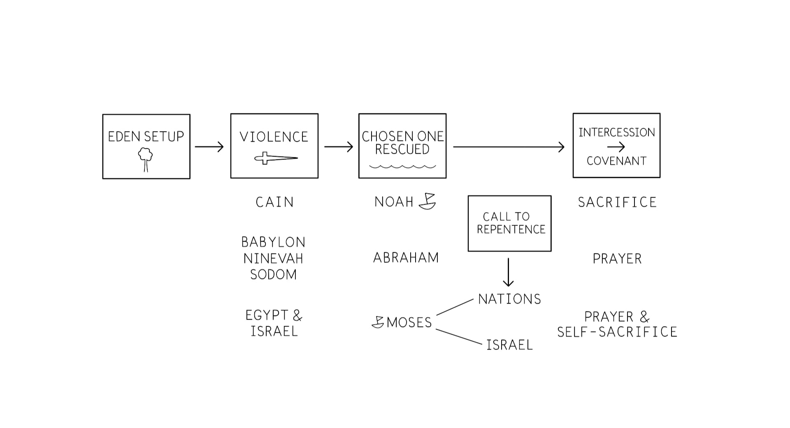

Sessão 12: Padrões Bíblicos que o Autor Assume que ConhecemosSession 12: Biblical Patterns the Author Assumes We Know
Principais AprendizadosKey Takeaways
A Bíblia Hebraica tem uma história única que se repete vez após vez. Conhecer este padrão nos ajuda a entender a história de Jonas.The Hebrew Bible has one storyline that repeats over and over. Knowing this pattern helps us understand the story of Jonah.
A história da Bíblia Hebraica é sobre Deus escolhendo um povo para abençoar todas as nações e respondendo ao clamor de violência e mal resgatando-os através das águas. Então, um escolhido intercede pelos ímpios para que a bênção da aliança de Deus possa sair para as nações.The storyline of the Hebrew Bible is about God choosing a people to bless all the nations and responding to the outcry of violence and evil by rescuing them through the waters. Then, a chosen one intercedes for the wicked so that God's covenant blessing can go out to the nations.
A História Principal da Bíblia HebraicaThe Main Story of the Hebrew Bible
A História Geral da Bíblia Hebraica. Ilustração criada por Tim Mackie para BibleProject Classroom: Jonas (2019).The Overall Storyline of the Hebrew Bible. Illustration created by Tim Mackie for BibleProject Classroom: Jonah (2019).
Esta sessão não tem outras anotações.This session has no other notes.
Pergunta de ReflexãoReflection Question

understand the story of Jonah.
Pense no padrão de um escolhido chamado para interceder pelos ímpios. Quem é o escolhido que se pretende ser no livro de Jonas? Como a história dele se encaixa ou não se encaixa neste padrão?Think about the pattern of a chosen one called to intercede for the wicked. Who is the chosen one meant to be in the book of Jonah? How does his story fit or not fit into this pattern?